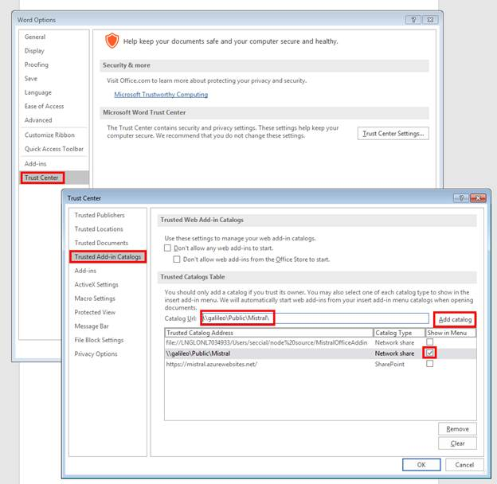

--This is a proof of concept--
How to install Mistral on Microsoft© Word Desktop
Specify the shared folder as a trusted catalog
- Open Microsoft© Word.
- Choose the File tab, and then choose Options.
- Choose Trust Center, and then choose the Trust Center Settings button.
- Choose Trusted Add-in Catalogs.
- In the Catalog Url box, enter the full network path to the shared folder catalog: \\LNGOXFAPPD009V\Mistral\
- Choose Add Catalog.
- Select the Show in Menu check box, and then choose OK.

- Close the application so your changes will take effect.
Load the add-in
- Re-open Microsoft© Word.
- Select My Add-ins on the Insert tab of the ribbon.
- Choose SHARED FOLDER at the top of the Office Add-ins dialog box.
- Select the name of the add-in (“Clausebank”) and choose OK to insert the add-in.
How to install Mistral on Microsoft© Word Online
- Open Microsoft© Word Online.
- Select Office Add-ins on the Insert tab of the ribbon.
- Choose Upload My Add-in in the top-right of the dialog.
- Choose Browse…
- Enter: https://raw.githubusercontent.com/clausebank/clausebank.github.io/master/clausebank.xml
- Choose Upload.
For support and feedback email Leo